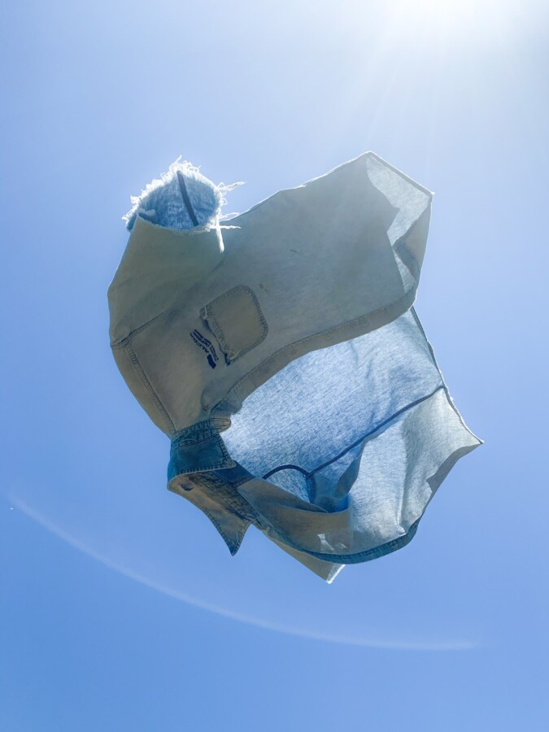

Isaac Couch: The Blue Works, closing reception
Closing Reception: May 9, 1:00–5:00 PM
Originally from Western Kentucky, I have carried the textures, tensions, and rhythms of the South to Chicago. My work, that is rooted in fashion, but never confined by it, has earned fellowships with Luminarts (2021), the Arts Club of Chicago (2023-24), Chicago Artist Coalition (2024-26), and has been shown in spaces from the Comfort Station, Co-Prosperity Sphere, Epiphany Center of the Arts, to EXPO Chicago. Between the studio and the classrooms of SAIC, I work to challenge the fashion standards, explore the truth in my identity, and inspire students to do the same.
Compound Yellow
244 Lake Street
Oak Park, IL 60302
Open Saturdays 2:00–6:00 PM or by appointment
For more information:
Contact: